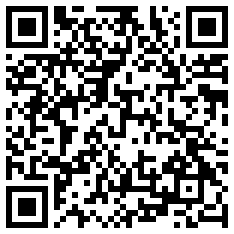
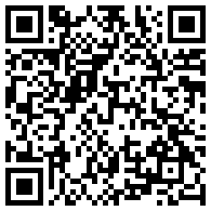
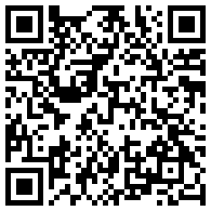
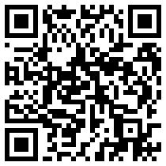

在留カード再交付申請における
同居の配偶者（16歳以上の親族）による代理申請について
窓口ご担当者様へ ／ 作成日： 年 月 日
| 申請人（本人） | 氏名： 国籍： 在留カード番号： |
|---|
| 代理で申請する者 | 氏名： （申請人の夫・同居） |
|---|
| 申請の種類 | □ 紛失等による再交付（入管法第19条の12） □ 汚損等による再交付（第19条の13第1項前段）
□ 交換希望による再交付（第19条の13第1項後段） |
|---|
1. 本件の申請根拠
本件は、入管法第61条の9の3第3項に基づき、申請人本人の依頼により、申請人と同居する16歳以上の親族（配偶者）が本人に代わって行う申請です。
「疾病その他の事由により自ら出頭できない場合」（同条第2項）を根拠とするものではありません。
仕事の多忙が第2項の「その他の事由」に該当しないことは承知しております。
2. 法令の規定（出入国管理及び難民認定法）
第61条の9の3（本人の出頭義務と代理人による届出等）
第1項：外国人が同項各号の行為をするときは、自ら出頭して行わなければならない。在留カードの再交付申請（第19条の12第1項、第19条の13第1項等）は第2号に掲げられています。
第2項（要旨）：外国人が16歳未満の場合又は疾病その他の事由により自ら第1項第1号・第2号の行為ができない場合は、同居する配偶者・子・父又は母・その他の親族（16歳未満を除く）が、この順位により代わってしなければならない。
第3項（条文）：
第一項第一号及び第二号に掲げる行為については、前項に規定する場合のほか、同項各号に掲げる者（十六歳に満たない者を除く。）であつて外国人と同居するものが当該外国人の依頼により当該外国人に代わつてする場合その他法務省令で定める場合には、同項の規定にかかわらず、当該外国人が自ら出頭してこれを行うことを要しない。
このように第3項は「前項に規定する場合のほか」と定めており、本人に疾病等の事由がなくても、本人の依頼があれば同居の配偶者が代わって申請できる、という第2項とは別の類型です。
3. 第2項と第3項の比較
| 第2項（出頭不能による代理） | 第3項（本人の依頼による代理） |
|---|
| 要件 | 本人が16歳未満、又は疾病その他の事由で出頭できない | 本人の依頼があること（理由は問わない） |
| 代理できる者 | 同居する16歳以上の親族（配偶者→子→父母→その他の親族の順位） | 同居する16歳以上の親族（配偶者・子・父母・その他の親族） |
| 主な疎明資料 | 関係を示す住民票等、診断書・理由書等 | 関係・同居を示す住民票等、委任状 |
| 「仕事の多忙」 | 該当しない（庁HPに明記） | 理由として問われない |
4. 出入国在留管理庁ホームページの記載
「紛失等による在留カードの再交付申請」ページの「申請提出者」欄には、代理人として次の2類型が掲載されています。
代理人
（1）申請人本人が16歳に満たない場合又は疾病その他の事由により自ら出頭して申請することができない場合には、申請人本人と同居する16歳以上の親族
（2）申請人本人の依頼による場合：申請人本人と同居する16歳以上の親族（要旨）
同ページの注記にある次の一文は、上記（1）の「その他の事由」についての説明です。
なお、仕事の多忙や通勤・通学等といった場合は、「その他の事由により自ら出頭することができない場合」には該当しません。
本件は（2）の類型であり、この注記の対象ではありません。「汚損等による在留カードの再交付申請」のページにも、代理人が本人の依頼により申請する場合の必要書類として委任状が挙げられています。
（1）と注記は庁ホームページの文言を引用しています。（2）は要旨です。正確な文言は下のQRコードのページでご確認ください。
5. 本日持参した書類
- 在留カード再交付申請書（代理人欄に記入済み）
- 写真 1葉（縦4cm×横3cm、3か月以内に撮影、無帽・無背景）
- 申請人本人の旅券（パスポート）又はその写し
- 【紛失の場合】遺失届受理証明書、又は警察の受理番号の控え（盗難の場合は盗難届受理証明書等）
- 【汚損・交換希望の場合】現在の在留カード
- 申請人本人が作成・署名した委任状（本人の依頼の疎明）
- 住民票（世帯全員・続柄記載、発行3か月以内）…同居及び夫婦関係の疎明
- 代理人（夫）の顔写真付き本人確認書類（在留カード／運転免許証等）
- 【交換希望の場合】手数料 1,600円分の収入印紙
6. お願い
本件が受付できないとご判断される場合は、お手数ですが、根拠となる法令・規則・内部基準と、ご判断されたご担当者様のお名前（又は部署名）をご教示いただけますでしょうか。また、上席の方へのご確認をお願いできれば幸いです。

紛失等による
在留カードの再交付申請

汚損等による
在留カードの再交付申請

交換希望による
在留カードの再交付申請

e-Gov法令検索
出入国管理及び難民認定法
中文说明：丈夫代理妻子办理在留卡再发行
供你自己阅读。前面3页（日语）是给入管窗口看的。
一、结论
你说得对，但入管工作人员说的话本身也没错，你们讲的是两条不同的规定。
① 入管法第61条之9之3第2项：本人因生病等原因来不了，由同居亲属代办。官网明确写了“工作忙不算”。工作人员说的就是这一条。
② 同条第3项：只要本人委托，同居的16岁以上亲属（配偶等）就可以代办，不问理由。你应该用这一条。
所以到窗口时，不要说“她工作忙来不了”，而要说“我是她同居的丈夫，基于第3项受她委托来办理”，同时拿出委任状和住民票。
二、能用第3项的前提条件（必须全部满足）
- 同居：你和妻子住在同一个地址。住民票上显示同一住址（最好同一个世带）。这是关键。如果你们没住在一起，这条路就走不通，只能本人去或委托行政书士。
- 你是16岁以上的亲属（丈夫没问题）。
- 有妻子本人的委托：用第3页的委任状，由妻子亲笔签名。
- 办理的是在留卡相关手续，即再发行（遗失、污损或想更换）。注意：在留期间更新和变更在留资格不适用这一条，那些手续必须本人去或委托行政书士。
三、要带的材料清单
- 在留卡再交付申请书（入管官网可下载，代理人栏填你的信息）
- 妻子的证件照1张（4cm×3cm，3个月内拍摄）
- 妻子的护照（原件；如果护照也丢了，先咨询窗口）
- 遗失时：警察局的遗失届受理证明书或受理番号（被盗时带盗难届受理证明）
- 污损或更换时：现在的在留卡
- 委任状（本PDF第3页，妻子亲笔签名）
- 住民票：开“世带全员、记载续柄”的版本，3个月以内。用来证明你们同居且是夫妻
- 你自己的带照片身份证件（在留卡或驾照）
- 更换时需要手续费1,600日元的收入印纸；遗失和污损免费
- 本PDF（打印出来）
四、窗口怎么说（可以照着念）
「妻は病気ではありません。今回は、入管法第61条の9の3第2項ではなく、第3項の『本人の依頼により同居の親族が代わって申請する場合』として申請します。委任状と住民票を持ってきました。」
（我妻子没生病。这次不是按第2项，而是按第3项“受本人委托、由同居亲属代为申请”来办。委任状和住民票都带来了。）
「受付できない場合は、根拠となる規定と、ご担当者のお名前を教えていただけますか。上の方にも確認していただけますか。」
（如果不能受理，能告诉我依据的规定和负责人的名字吗？能请上级确认一下吗？）
五、如果还是被拒绝
- 保持礼貌，请对方找上级（上席の方）确认。很多时候是窗口人员把第2项和第3项混淆了。
- 当场或事后打外国人在留综合信息中心 0570-013904（有中文服务），问：“在留卡再交付，同居的丈夫凭本人委任状，按61条之9之3第3项代办，可以吗？”并记下回答人的名字和时间。
- 记录日期、窗口、负责人姓名、对方说的拒绝理由。
- 如果时间紧，可以委托申请取次行政书士代办（需付费），这样本人也不用去。
⚠ 注意事项
- 期限：在留卡遗失的话，要在发现之日起14天内申请再发行（在国外发现时，从回日本入境之日起算）。逾期可能会被罚款，别因为争论拖过期限。
- 为什么没有官网截图：制作这份资料的环境连不上入管官网，所以没能截图。建议你自己打开第2页二维码对应的官网页面，把“申請提出者”一栏打印出来，附在这份资料后面一起带去。窗口人员看到官方原文会更有说服力。
- 第2页中，官网第（2）类“受本人委托”的文字是概要，不是原文逐字引用。法律条文（第3项）是原文。
- 建议出发前先打一次上面的信息中心确认，或打给你们要去的入管局。各地入管的运作可能略有不同，“是否适当”也有一定的裁量。
- 本资料是根据公开信息整理的参考资料，不是法律意见。
六、参考来源
- 出入国在留管理庁「紛失等による在留カードの再交付申請」 https://www.moj.go.jp/isa/applications/procedures/nyuukokukanri10_00010.html
- 出入国在留管理庁「汚損等による在留カードの再交付申請」 https://www.moj.go.jp/isa/applications/procedures/nyuukokukanri10_00012.html
- 出入国在留管理庁「交換希望による在留カードの再交付申請」 https://www.moj.go.jp/isa/applications/procedures/nyuukokukanri10_00013.html
- 出入国管理及び難民認定法 第61条の9の3（e-Gov法令検索） https://laws.e-gov.go.jp/law/326CO0000000319